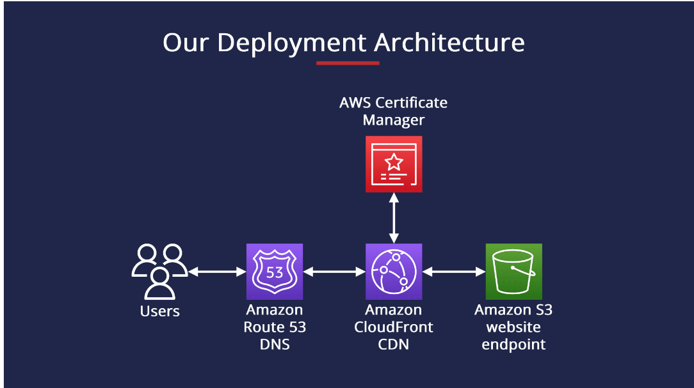
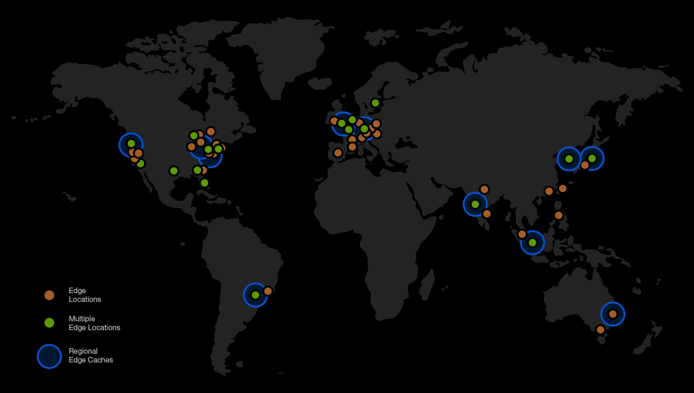

CloudFront is AWS's super-fast Content Delivery Network (CDN). It speeds up your websites, videos, images by caching them close to users worldwide! [web:8][web:7]

Key Features
Global Edge Locations (400+ points worldwide) for low latency [web:13]
Caches static/dynamic content
Secure with HTTPS, DDoS protection
Integrates with S3, EC2, Lambda
Pay only for what you use! 😊

How Does It Work?
User requests content
Goes to nearest Edge Location
If cached, serve fast! Else fetch from origin (S3/EC2) and cache [web:8]